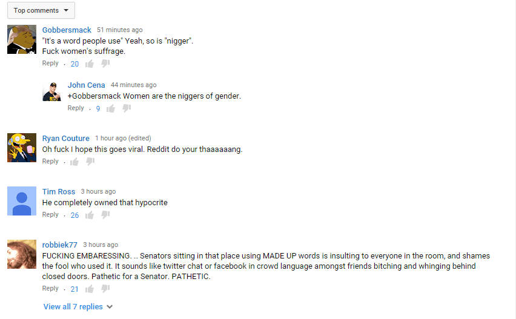
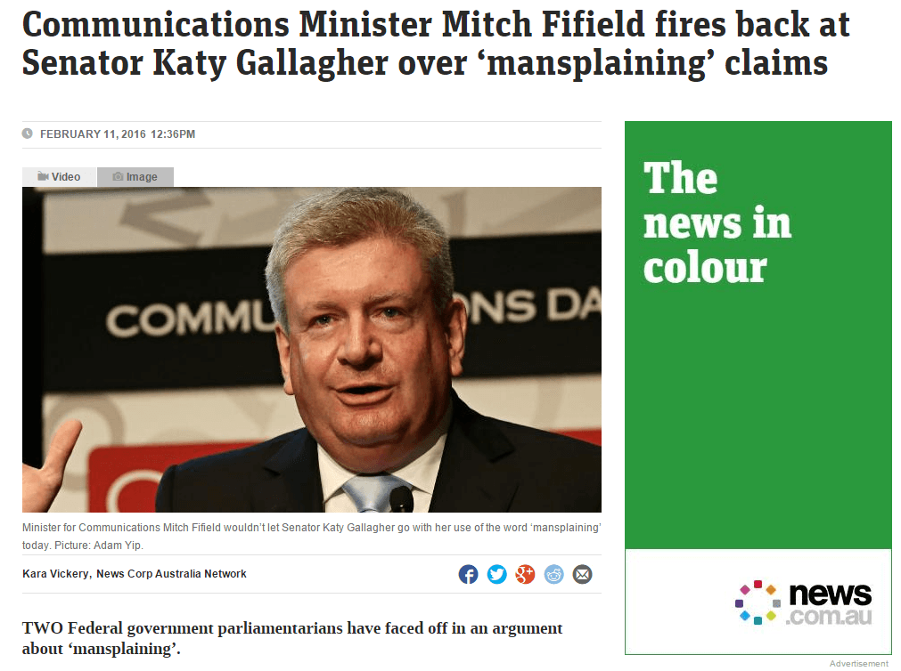
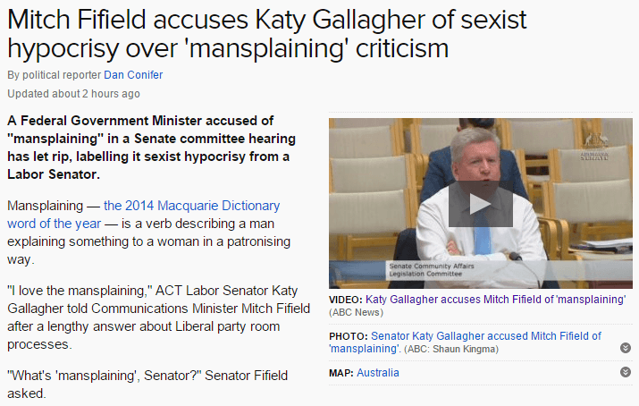
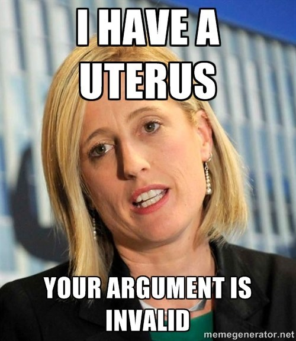

Thomas Hobbes is an Australian uni student hiding out in his mother's basement waiting for the singularity to arrive. As a backup plan he is secretly hoping to avoid the perils of an actual career by becoming a writer and travelling the world.


Australia, there may be hope for you yet.
In a story quickly going viral, a Labor senator named Katy Gallagher accused fellow Liberal Senator Mitch Fifield of “mansplaining” during a proceeding after a particularly lengthy explanation of government processes. Initially confused by the unfamiliar term, the Senator quickly exploded into a righteous rant that, in the politest possible way, shut down the accusation completely.
I present it here in admiration of your manly glory, Senator Fifield.
The only thing better than watching this exchange is reading the subsequent comments:

Even the subsequent news articles about the exchange are surprisingly neutral, simply describing it as a “row” or “face off” rather than the usual “man dares to disagree with woman!”


Clearly, from the shady internet chatroom to the newsdesk to the corridors of power, people are getting increasingly sick of this feminazi bullshit.
What I love most is how quickly the distinguished senator shut down the “mansplaining” argument. Without any preparation, he poked holes in it in about ten seconds, exposing it for the childish I-know-you-are-but-what-am-I bullshit that is it.

History will quickly forget this exchange. It is but one small skirmish in a decades-long culture war, but it is one that the feminists lost. Let us savor the moment.
Yes, it is disturbing to realize that you have people with the apparent mental faculties of twelve year olds making up 30% of your parliament. But let us appreciate that as overwhelming as the social justice crowd sometimes appears, there are still plenty of masculine men out there not willing for a moment to put up with their pathetic whining. They are still doing things old school with logic and facts. Not everyone has bothered keeping up to date with the newest edition of Newspeak, and that includes our politicians.
Honestly, I think Senator Fifield should have been grateful to be accused of mansplaining. If anything, its praise. Who uses such an accusation, except for someone who realizes they are totally outmatched in an argument? Quick, someone is making a fool of a women! Call in the white knight airstrike! Call in the media!
I can only imagine her terror when she realized no help was forthcoming. Like Hillary Clinton, she’s perhaps discovering that with greater power comes greater responsibility, and that in 2016 a pussy-pass has less value than it once did.
Read More: How Senator Kirsten Gillibrand Doubled Down On The False Rape Culture Narrative